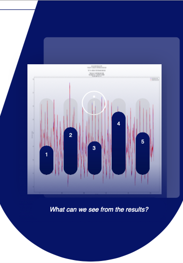
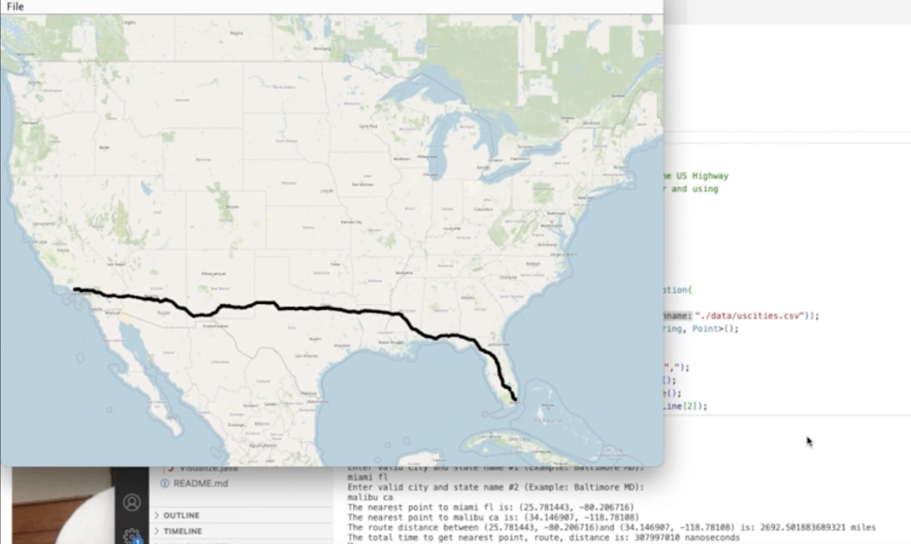

My Personal Website
March 2023 (and constantly updating)
I self-learned web development and built this website as a personal project over spring break in my freshman year. I took the iniative to explore online developer tools and endeavored to increase interactivity in the website.
Tech Stack
HTML
CSS
JavaScript

Virtualizing Museum Exhibit "150 Faces of Durham"
Summer 2023
I built an accessible, responsive, and mobile-friendly virtual exhibit for the Museum of Durham History showcasing 150 people that contributed to the history of Durham. Some of my tickets included the landing page, the about us page, card detail view, student project carousel, design overhaul for the gallery page, and lazy loading/pagination.
Tech Stack
Svelte
SvelteKit
MongoDB
AWS

Novel LSTM Glucose Prediction Model
June 2020 - October 2020
I collaborated with an assistant professor at University College London to build a glucose prediction model for Type 1 Diabetes patients using Recurrent Neural Networks. My study compared the performances of conventional RNN to Long Short-Term Memory and reduced one-third of running time while maintaining high accuracy.
Tech Stack
Python
TensorFlow
LaTeX

NLP Sentiment Analysis on Social Media Hate Speech
May 2021 - December 2021
Inspired by the Bechdel Test using NLP, I strove to research the optimal sentiment analysis model for large corpora. I applied five-fold validation to evaluate six BERT (Bidirectional Encoder Representations from Transformers) models under different learning rates and data volumes. Eventually, I built a detector that tests over 10k Twitter posts (hate speech was prevalent on social media).
Tech Stack: Python

System Vulnerability Reverse Engineering Labs
March 2023 - April 2023
For my computer systems class(also a class for which I now become the TA), I successfully defused four phases of a personalized binary bomb in one lab, and I applied buffer overflow attacks to two separate binary executables in another lab. In the two projects, I demonstrated my reverse-engineering skill in examining x86-64 assembly in gdb as well as my technical understanding of memory layout and the life cycle of a program compilation.
Tech Stack: C programming

United States Highway Network Routing Service
November 2022 - December 2022
As a class project, I implemented a routing service that represents the United States highway network as a graph and calculated routes and distances on this network with a partner. Our program allows the users to enter two U.S. cities, and it calculates and visualizes the shortest path between the two cities.
Tech Stack: Java

Autocomplete Search Bar
November 2022
Coded an autocomplete software application that suggests and constantly updates possible completions for the text of each keystroke that users type in the input.
Tech Stack: Java